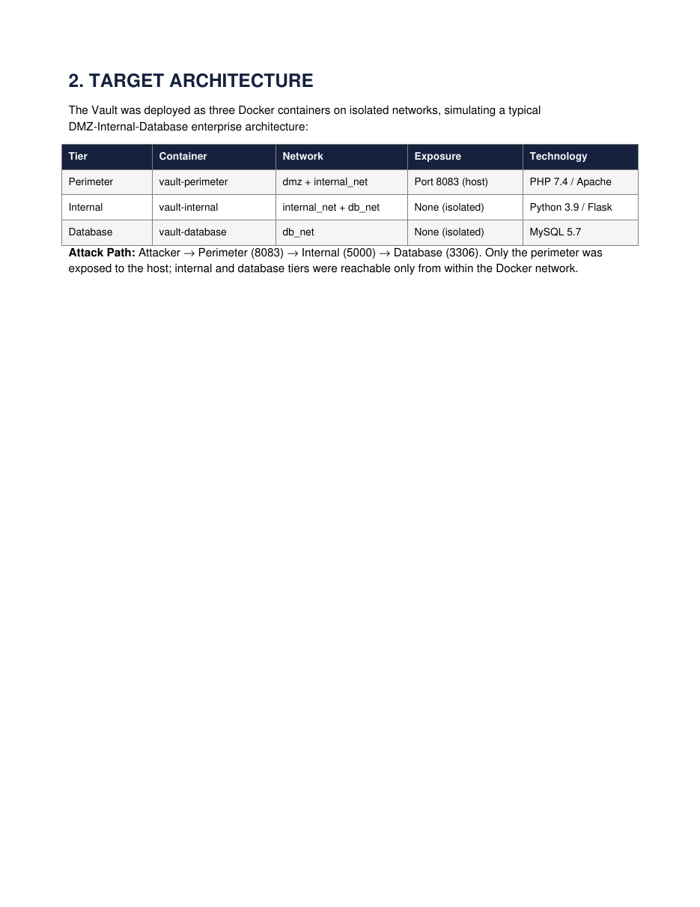
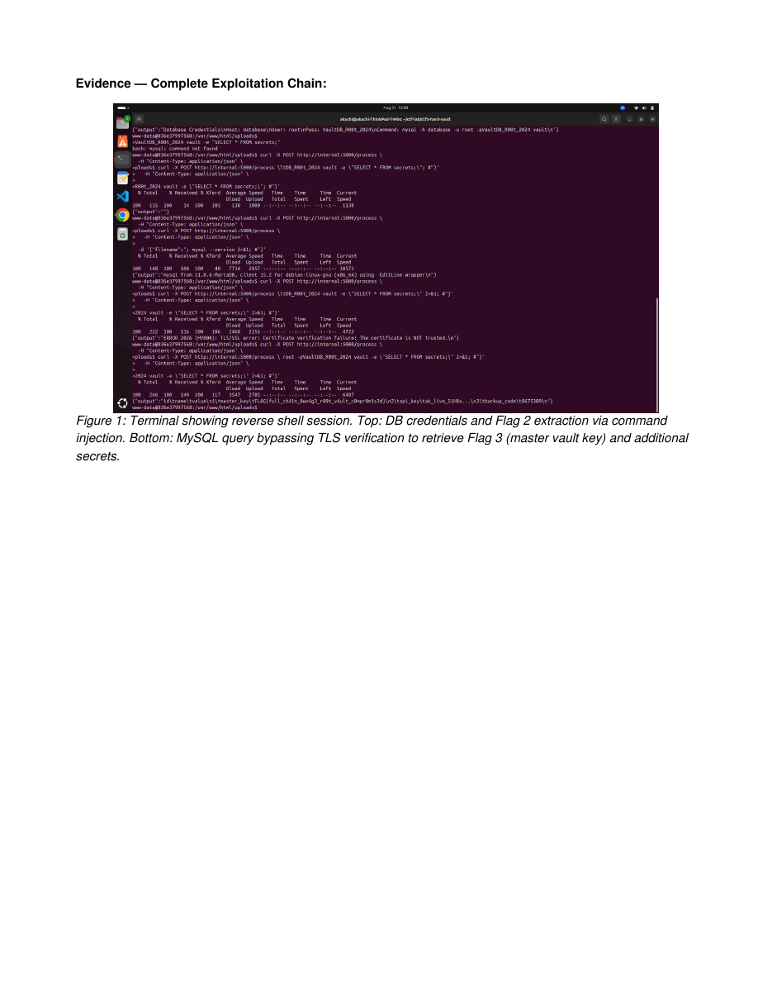

The Vault: multi-tier network compromise
A three-tier lab network (perimeter, internal service, database) compromised from a single unauthenticated file upload, following PTES from recon to post-exploitation.
Lab work with synthetic or lab-provided data. No production systems or real customer data were involved.
Evidence


Target architecture
| Tier | Technology | Exposure |
|---|---|---|
| Perimeter | PHP / Apache | Only tier exposed to the host |
| Internal | Python / Flask file processor | Reachable only from the perimeter network |
| Database | MySQL 5.7 | Reachable only from the internal network |
The goal was to breach the perimeter, pivot through the internal network and extract the master key from the database. All tiers ran as local Docker containers built for authorized training.
Attack chain
- Perimeter breach. The upload form had no extension, MIME or content checks. A one-line PHP web shell executed as
www-data. CVSS 9.8, CWE-434. - Foothold. Upgraded to a bash reverse shell for interactive access and internal reconnaissance.
- Pivot. Docker DNS revealed an internal Flask service on port 5000 that the perimeter could reach freely. CVSS 7.5, CWE-284.
- Internal exploitation. The service built a shell command from user input and ran it with
os.popen(). A semicolon payload achieved command execution and exposed database credentials. CVSS 9.8, CWE-78. - Database compromise. Used the recovered credentials to query the secrets table and retrieve the master key and other stored secrets. CVSS 9.1, CWE-522.
Root-cause example
The internal service's vulnerable pattern:
cmd = f"cat /opt/files/{filename}"
result = os.popen(cmd).read()Any filename containing ; runs a second command. The fix is to avoid the shell entirely and validate the filename against an allowlist.
Findings and remediation
| Finding | Risk | Remediation |
|---|---|---|
| Unrestricted file upload | Critical | Allowlist extensions, MIME types and magic bytes; store uploads outside the web root with execution disabled. |
| OS command injection | Critical | Never pass user input to a shell; use safe APIs with argument lists and strict input validation. |
| Weak network segmentation | High | Least-privilege, deny-by-default rules between tiers so one foothold cannot reach everything. |
| Plaintext database credentials | High | Move secrets to a secrets manager and use least-privilege database accounts. |
| MySQL TLS misconfiguration | Medium | Configure certificates properly and enforce encrypted connections. |
Takeaway
Roughly 15 minutes from first request to full compromise. Segmentation existed, but without lateral-movement controls a single perimeter flaw cascaded through every tier. Defence in depth has to cover the paths between tiers, not just the edge.